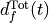
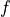
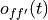

boario.model_base module¶
-
class
ARIOBaseModel(pym_mrio: pymrio.core.mriosystem.IOSystem, mrio_params: dict, simulation_params: dict, results_storage: pathlib.Path)[source]¶ Bases:
objectThe core of an ARIO3 model. Handles the different arrays containing the mrio tables.
A ARIOBaseModel wrap all the data and functions used in the core of the most basic version of the ARIO model (based on Hallegatte2013 and Guan2020).
- Variables
results_storage (pathlib.Path) – The path where the results of the simulation are stored.
regions (numpy.ndarray of str) – An array of the regions of the model.
n_regions (int) – The numbers of regions.
sectors (numpy.ndarray of str) – An array of the sectors of the model.
n_sectors (int) – The numbers of sectors of the model.
fd_cat (numpy.ndarray of str) – An array of the final demand categories of the model ([“Final demand”] if there is only one)
n_fd_cat (int) – The numbers of final demand categories.
monetary_unit (int) – monetary unit prefix (i.e. if the tables unit is 10^6 € instead of 1 €, it should be set to 10^6).
psi (float) – Value of the psi parameter. (see Mathematical background).
model_timestep (int) – The number of days between each step. (Current version of the model was not tested with other values than 1).
timestep_dividing_factor (int) – Kinda deprecated, should be equal to model_timestep.
rebuild_tau (int) – Value governing the rebuilding speed (see Mathematical background).
overprod_max (float) – Maximum factor of overproduction (default should be 1.25).
overprod_tau (float) – Characteristic time of overproduction in number of model_timestep (default should be 365).
overprod_base (float) – Base value of overproduction (Default to 0).
inv_duration (numpy.ndarray of int) – Array of size n_sectors setting for each inputs the initial number of model_timestep of stock for the input. (see Mathematical background).
restoration_tau (numpy.ndarray of int) – Array of size n_sector setting for each inputs its characteristic restoration time with model_timestep days as unit. (see Mathematical background).
Z_0 (numpy.ndarray of float) – 2-dim array of size (n_sectors * n_regions,n_sectors * n_regions) representing the intermediate (transaction) matrix (see Mathematical background).
Z_C (numpy.ndarray of float) – 2-dim array of size (n_sectors, n_sectors * n_regions) representing the intermediate (transaction) matrix aggregated by inputs (see Mathematical background).
Z_distrib (numpy.ndarray of float) – Z_0 normalised by Z_C, i.e. representing for each input the share of the total ordered transiting from an industry to another.
Y_0 (numpy.ndarray of float) – 2-dim array of size (n_sectors * n_regions,n_regions * n_fd_cat) representing the final demand matrix.
X_0 (numpy.ndarray of float) – Array of size n_sectors * n_regions representing the initial gross production.
gdp_df (pandas.DataFrame) – Dataframe of the total GDP of each region of the model
VA_0 (numpy.ndarray of float) – Array of size n_sectors * n_regions representing the total value added for each sectors.
tech_mat (numpy.ndarray) – 2-dim array of size (n_sectors * n_regions, n_sectors * n_regions) representing the technical coefficients matrix
overprod (numpy.ndarray) – Array of size n_sectors * n_regions representing the overproduction coefficients vector.
- Raises
RuntimeError – A RuntimeError can occur when data is inconsistent (negative stocks for instance)
-
update_system_from_events(events: list[Event]) → None[source]¶ Update MrioSystem variables according to given list of events
Compute kapital loss for each industry affected as the sum of their total rebuilding demand (to each rebuilding sectors and for each events). This information is stored as a 1D array
kapital_lostof size (n_sectors * n_regions). Also compute the total rebuilding demand.- Parameters
events (‘list[Event]’) – List of events (as Event objects) to consider.
Examples
FIXME: Add docs.
-
calc_rebuild_house_demand(events: list[Event]) → numpy.ndarray[source]¶ Compute rebuild demand for final demand
Compute and return rebuilding final demand for the given list of events by summing the final_demand_rebuild member of each event. Only events tagged as rebuildable are accounted for. The shape of the array returned is the same as the final demand member (Y_0) of the calling MrioSystem.
- Parameters
events (‘list[Event]’) – A list of Event objects
- Returns
An array of same shape as Y_0, containing the sum of all currently rebuildable final demand stock from all events in the given list.
- Return type
np.ndarray
Notes
Currently the model wasn’t tested with such a rebuilding demand. Only intermediate demand is considered.
-
calc_rebuild_firm_demand(events: list[Event]) → numpy.ndarray[source]¶ Compute rebuild demand for intermediate demand
Compute and return rebuilding intermediate demand for the given list of events by summing the industry_rebuild member of each event. Only events tagged as rebuildable are accounted for. The shape of the array returned is the same as the intermediate demand member (Z_0) of the calling MrioSystem.
- Parameters
events (‘list[Event]’) – A list of Event objects
- Returns
An array of same shape as Z_0, containing the sum of all currently rebuildable intermediate demand stock from all events in the given list.
- Return type
np.ndarray
-
calc_tot_rebuild_demand(events: list[Event]) → None[source]¶ Compute and update total rebuild demand.
Compute and update total rebuilding demand for the given list of events. Only events tagged as rebuildable are accounted for.
TODO: ADD MATH
- Parameters
events (‘list[Event]’) – A list of Event objects
separate_rebuilding (‘bool’) – A boolean specifying if demand should be treated as a whole (true) or under the characteristic time/proportional scheme strategy.
-
calc_production_cap()[source]¶ Compute and update production capacity.
Compute and update production capacity from possible kapital damage and overproduction.
- Raises
ValueError – Raised if any industry has negative production (probably from kapital loss too high)
-
calc_prod_reqby_demand(events: list[Event], separate_rebuilding: bool = False) → None[source]¶ Computes and updates total demand
Update total rebuild demand (and apply rebuilding characteristic time if
separate_rebuildingis False, then sum/reduce rebuilding, orders and final demand together and accordingly update vector of total demand.- Parameters
events (‘list[Event]’) – List of Event to consider for rebuilding demand.
separate_rebuilding (bool) – A boolean specifying if rebuilding demand should be treated as a whole (true) or under the characteristic time/proportional scheme strategy.
- Returns
- Return type
-
calc_production(current_step: int)[source]¶ Compute and update actual production
Compute
production_optandinventory_constraintsas :
![\begin{alignat*}{4}
\iox^{\textrm{Opt}}(t) &= (x^{\textrm{Opt}}_{f}(t))_{f \in \firmsset} &&= \left ( \min \left ( d^{\textrm{Tot}}_{f}(t), x^{\textrm{Cap}}_{f}(t) \right ) \right )_{f \in \firmsset} && \text{Optimal production}\\
\mathbf{\ioinv}^{\textrm{Cons}}(t) &= (\omega^{\textrm{Cons},f}_p(t))_{\substack{p \in \sectorsset\\f \in \firmsset}} &&=
\begin{bmatrix}
\tau^{1}_1 & \hdots & \tau^{p}_1 \\
\vdots & \ddots & \vdots\\
\tau^1_n & \hdots & \tau^{p}_n
\end{bmatrix}
\odot \begin{bmatrix} \iox^{\textrm{Opt}}(t)\\ \vdots\\ \iox^{\textrm{Opt}}(t) \end{bmatrix} \odot \ioa^{\sectorsset} && \text{Inventory constraints} \\
&&&= \begin{bmatrix}
\tau^{1}_1 x^{\textrm{Opt}}_{1}(t) a_{11} & \hdots & \tau^{p}_1 x^{\textrm{Opt}}_{p}(t) a_{1p}\\
\vdots & \ddots & \vdots\\
\tau^1_n x^{\textrm{Opt}}_{1}(t) a_{n1} & \hdots & \tau^{p}_n x^{\textrm{Opt}}_{p}(t) a_{np}
\end{bmatrix} \cdot \psi && \\
\end{alignat*}](../_images/math/dfdc4f104e3feab0a514ba9327890d3798bb581d.png)
If stocks do not meet inventory_constraints for any inputs -> Decrease production accordingly :

Also warns in log if such shortage happens.
- Parameters
current_step (int) – current step number
- Returns
- Return type
A boolean NDArray stock_constraint of the same shape as matrix_sock (ie (n_sectors,n_regions*n_sectors)), with True for any input not meeting the inventory constraints.
-
calc_inventory_constraints(production: numpy.ndarray) → numpy.ndarray[source]¶
-
distribute_production(t: int, events: list[Event], scheme: str = 'proportional', separate_rebuilding: bool = False)[source]¶ Production distribution module
Computes rebuilding demand for each rebuildable events (applying the rebuild_tau characteristic time)
Creates/Computes total demand matrix (Intermediate + Final + Rebuild)
Assesses if total demand is greater than realized production, hence requiring rationning
Distributes production proportionally to demand such that :

Where :
is the received orders matrix,
is the final demand received matrix,
is the rebuilding/repair achieved matrix,
 is the total demand to industry ,
is ’s realized production,
 is the quantity of product ordered by industry to industry ,
is the quantity of product ordered by household
 to industry ,
to industry ,is the repaired/rebuilding demand ordered to .
Updates stocks matrix. (Only if np.allclose(stock_add, stock_use).all() is false)
Where :
is the inventory matrix,
is a row summation matrix,
is the (input not specific to region) technical coefficients matrix.
Computes final demand not met due to rationing and write it.
Updates rebuilding demand for each event (by substracting distributed production)
- Parameters
t (int) – Current timestep (required to write the final demand not met)
events (‘list[Event]’) – Simulation events list
scheme (str) – Placeholder for future distribution scheme
separate_rebuilding (bool) – If False, include the rebuilding in the proportional distribution scheme (with a characteristic time) else,
- Raises
RuntimeError – If negative values are found in places there’s should not be any
ValueError – If an attempt to run an unimplemented distribution scheme is tried
-
calc_orders(events: list[Event])[source]¶ TODO describe function
- Parameters
stocks_constraints –
- Returns
-
check_crash(prod_threshold: float = 0.8)[source]¶ Check for economic crash
This method look at the production vector and returns the number of industries which production is less than a certain share (default 20%) of the starting production.
- Parameters
prod_threshold (float, default: 0.8) – An industry is counted as ‘crashed’ if its current production is less than its starting production times (1 - prod_threshold).
Examples
FIXME: Add docs.
-
update_params(new_params)[source]¶ Update the parameters of the model.
Replace each parameters with given new ones.
Warning
Be aware this method calls
reset_record_files(), which resets the memmap files located in the results directory !- Parameters
new_params (dict) – Dictionary of new parameters to use.
-
reset_record_files(n_steps: int, reg_stocks: bool)[source]¶ Reset results memmaps
This method creates/resets the
memmapsarrays used to track production, demand, overproduction, etc.- Parameters
n_steps (int) – number of steps of the simulation (memmaps size are predefined)
reg_stocks (bool) – If true, create/reset the stock memmap (which can be huge)
-
write_rebuild_prod(t: int, rebuild_prod_agg: numpy.ndarray)[source]¶
-
write_final_demand_unmet(t: int, final_demand_unmet: numpy.ndarray)[source]¶
-
write_index(index_file)[source]¶ Write the indexes of the different dataframes of the model in a json file.
In order to easily rebuild the dataframes from the ‘raw’ data, this method create a JSON file with all columns and indexes names, namely :
regions names
sectors names
final demand categories
number of regions, sectors and industries (regions * sectors)
- Parameters
index_file (pathlib.Path) – Path to the file to save the indexes.
-
lexico_reindex(mrio: pymrio.core.mriosystem.IOSystem) → pymrio.core.mriosystem.IOSystem[source]¶ Reindex IOSystem lexicographicaly
Sort indexes and columns of the dataframe of an IOSystem by lexical order.
- Parameters
mrio (pymrio.IOSystem) – The IOSystem to sort
- Returns
The sorted IOSystem
- Return type
pymrio.IOSystem
Examples
FIXME: Add docs.